Learning Goals
At the end of this Tutorial, you will be able to:
- Recognise the most commonly used CSS text properties in frontend development:
- font-family
- font-weight
- font-style
- text-align
- line-height
- letter-spacing
- text-transform
- font-size
- Using system fonts from the font-stack with CSS custom properties.
- Applying a fluid typographic scale to adjust font sizes in a web page responsively according to the viewport width.
About responsive font sizes
As its name suggests, the font size property sets the size of text in headings and paragraphs. In web design, font sizes can be measured in different units.
In TailwindCSS, you can set font sizes using built-in classes such as text-sm, text-lg, text-xl, and so on.
TailwindCSS responsive font size classes
About fluid typography
Fluid typography means that the font sizes of text – headings, paragraphs, bulleted lists, menu items – on a web page ‘scale’ (shrink or expand) smoothly according to the width of the user’s device viewport.
Here are some examples of web pages that did not use fluid typography to scale font sizes correctly for mobile phone screens.
The effect you want to achieve is shown in the animation below.

TailwindCSS font size classes support various viewport widths, allowing you to easily implement fluid typography without writing custom CSS.
Updating your font sizes
Particularly for <h1> and <h2> headings, the font size values you choose will depend on the number of characters in the heading.
Follow these steps. In VS Code:
- Open page-1.html.
- Add the font-size style rules as shown below.
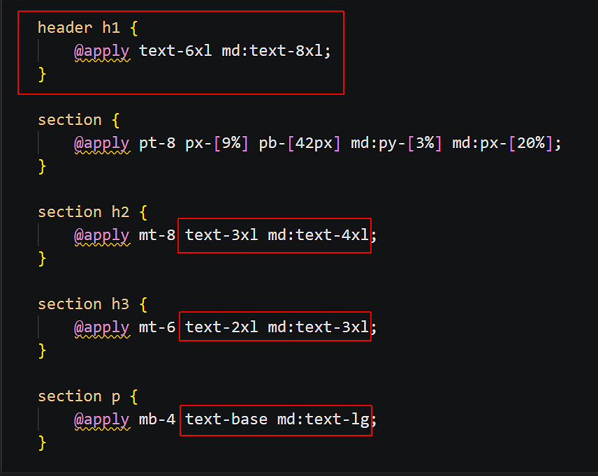
- Save the page-1.html file and view it in your browser.
- Open page-2.html.
- Add the font-size style rules as shown below.
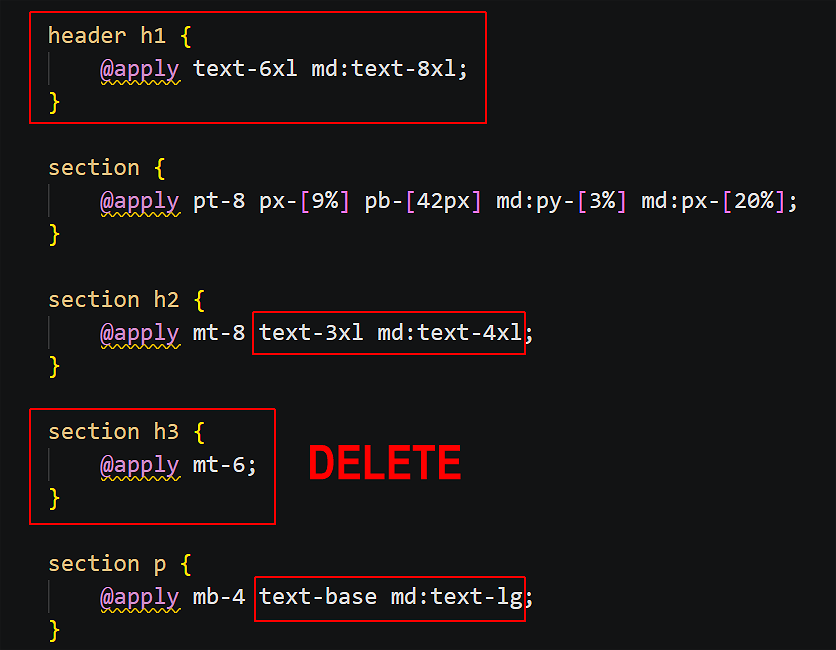
- Save page-2.html and view the web page in your browser.
- Open page-3.html.
- Add the font-size style rules as shown below.
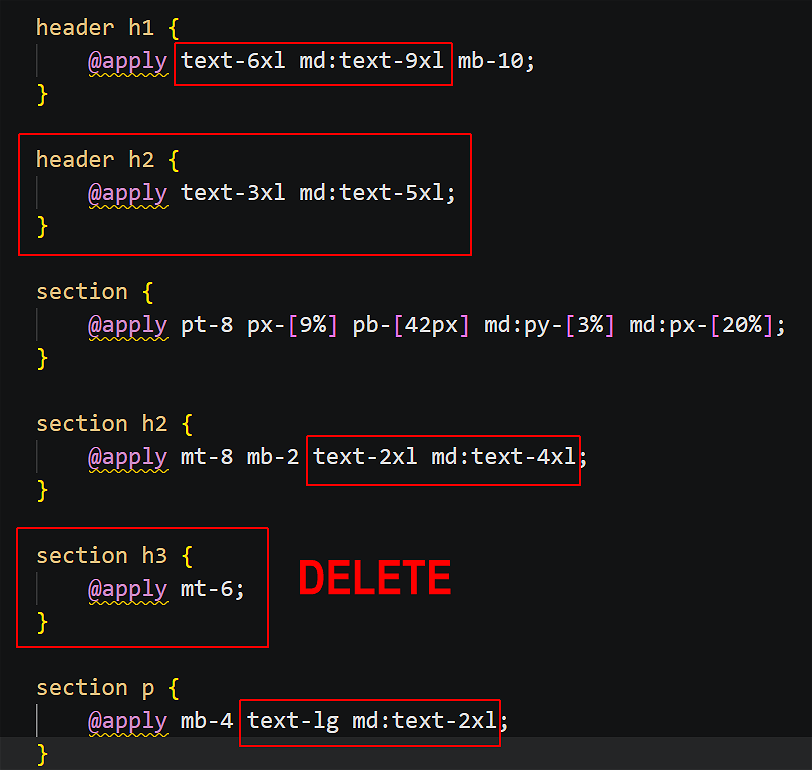
- Save the page-3.html file and web page in your browser.
About font families
The two basic font family values in wenb design are serif and sans-serif.
- Serifs are the small lines or ‘squiggles’ at the ends of letter, numbers and other characters.
- Sans-serif fonts do not have these serifs (‘sans’ is French for ‘without’.)
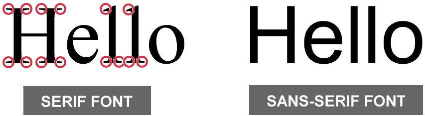
By default, web browsers all text in a serif font.
With TailwindCSS, the default font family for all text is sans-serif.
For printed documents, such as books, newspapers, magazines and so on...
- Serif fonts are generally used for long paragraphs of text. This is because the serifs help the human eye to recognise whole words rather than sequences of individual letters.
- For headings and short blocks of text, either serif or sans-serif fonts are equally appropriate choices.
In web pages, however, there is no evidence that paragraphs of text are more readable in serif fonts. So you will see fonts of either the serif or sans-serif family used for various elements of web pages.
Updating your font families
Here are the steps. In VS Code:
- Open page-1.html.
- Update the h1, h2 and h3 style rules as shown below.
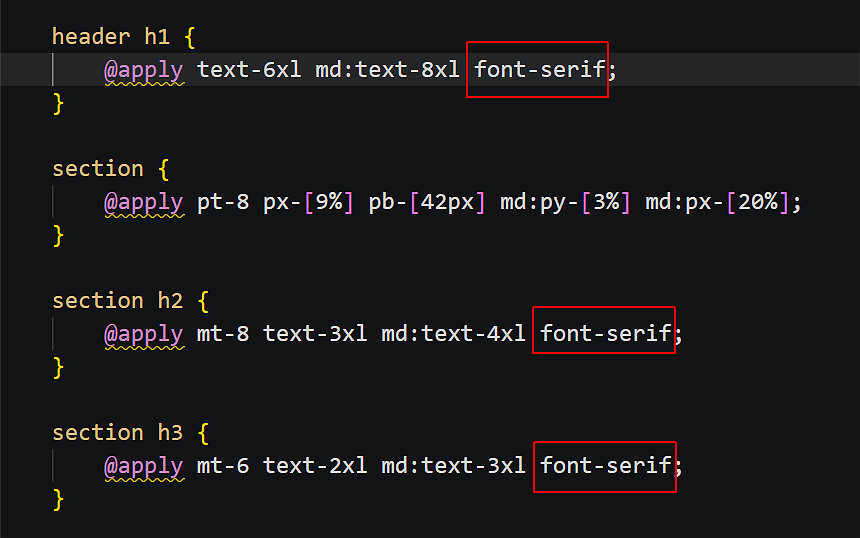
- Save page-1.html view the web page in your browser.
- Open page-2.html.
- Update the h1 and h2 styles as shown below.
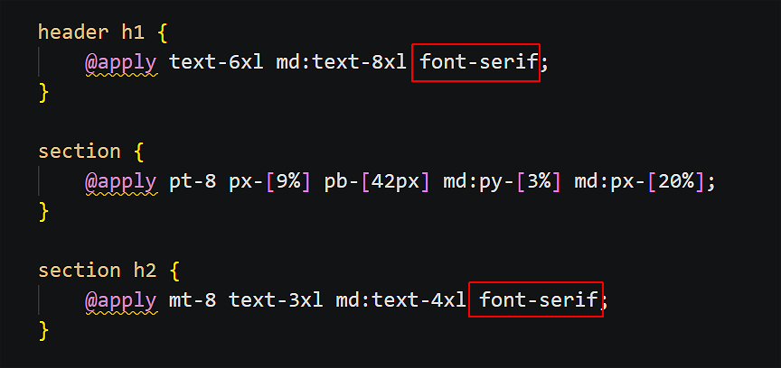
- Save page-2.html view the web page in your browser.
- Open page-3.html.
- Add a new body style declaration as shown below.
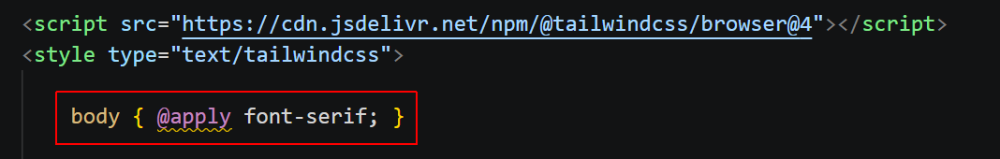
- Save page-3.html view the web page in your browser.
About font weights
In TailwindCSS, the two basic font weight values are font-normal and font-bold.
As you learnt in the previous Working with HTML Tutorial, you can make one or a few words in an element bold with the <b> ... </b> tag pair in HTML.
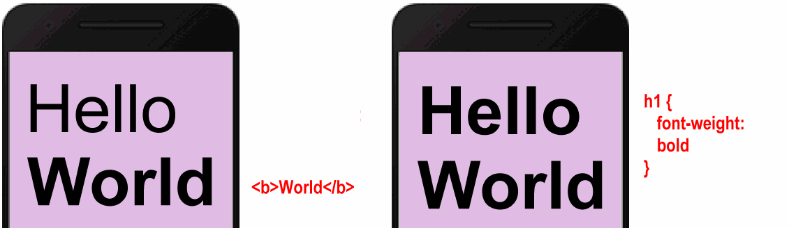
To make an entire heading or text paragraph bold, however, use the font-bold property in TailwindCSS.
By default, web browsers display paragraphs in normal weight and all headings in bold.
With TailwindCSS, however, headings are also displayed in normal weight.
Updating your font weights
In VS Code:
- Open page-1.html.
- Update the <h2> and <h3>styles as shown below.
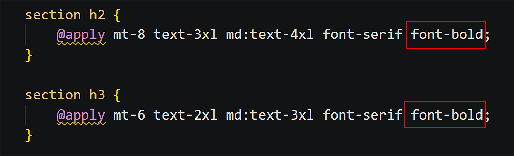
- Save page-1.html and view web page in your browser.
- Open page-2.html.
- Update the <h2> style as shown below.
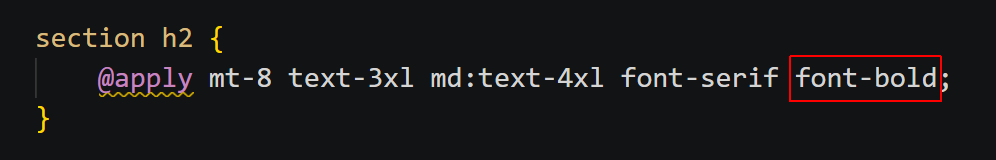
- Save page-2.html and view web page in your browser.
- Open page-3.html.
- Update the two styles as shown below.
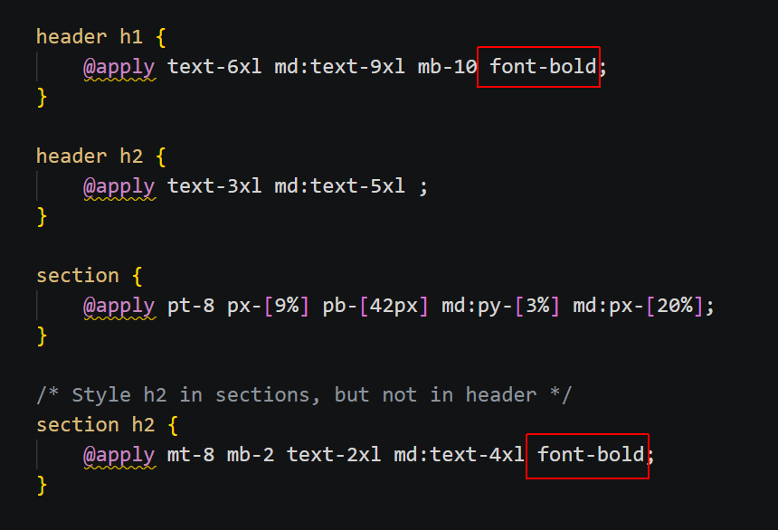
- Save page-3.html and view web page in your browser.
This ensures that only the <h2> tag inside the <section> containers will be 'targeted' by the style rule. The other <h2> tag inside the <header> containter will be unaffected.
About font styles
In TailwindCSS, the two basic font style values are normal and italic. By default, web browsers display all headings, sub-headings and text paragraphs in the normal font style.
As you learnt in the previous Working with HTML Tutorial, you can make one or a few words in an element italic with the <i> ... </i> tag pair in HTML.
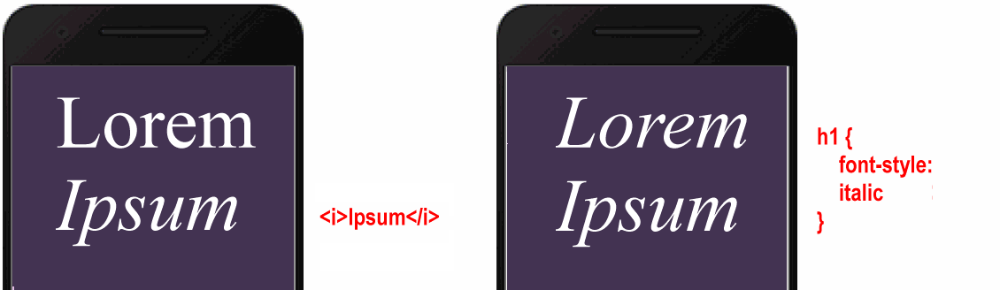
To make an entire heading or text paragraph italic, however, use the italic class. The two examples below are from Lou Levits.
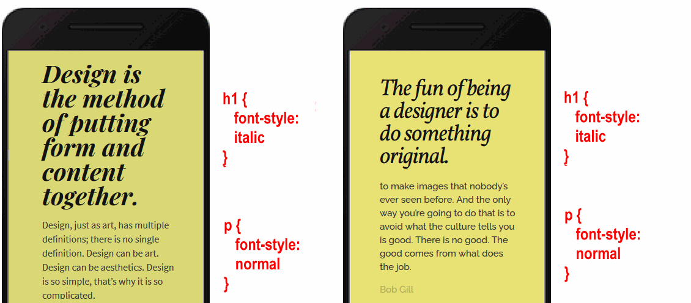
Updating your font styles
Let's use this property for page-3.html. In VS Code:
- Open page-3.html.
- Update the header h2 style declaration as shown below.
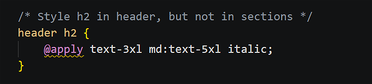
- Save page-3.html and view the web page in your browser.
About text alignment
In Microsoft Word or other word processors, you are typically offered four choices for aligning both headings and text paragraphs: Left, Centered, Right and Justified.
Below are examples of the left, center and right values of the text-align property in CSS.
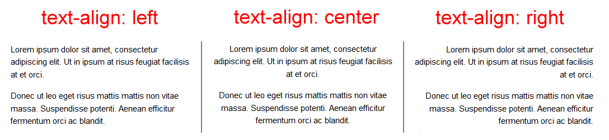
The text-justify value is not recommended because web browsers do not distribute spacing between characters and words proportionally.
Updating your text alignment
Often, you will want to centre-align the <h1> heading at the top of a web page. Here are the steps. In VS Code:
- Open page-1.html.
- Update the h1 style declaration as shown below.
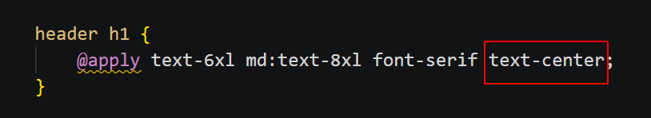
- Save page-1.html and view web page in your browser.
- Open page-2.html.
- Update the h1 style declaration as shown below.
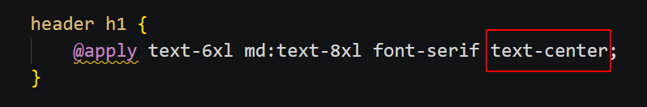
- Save page-2.html and view web page in your browser.
About text leading
In typography, the term leading reffers to the vertical distance between lines of text within a block-level tag. For most web browsers, the default leading is in the range 1.1 to 1.2.
- The lines in headings and sub-headings are typically close together. So you usually will not want to change the leading of your <h1>, <h2> and <h3> tags.
- For <p> paragraphs of text, however, it is a good idea to increase the leading value slightly.
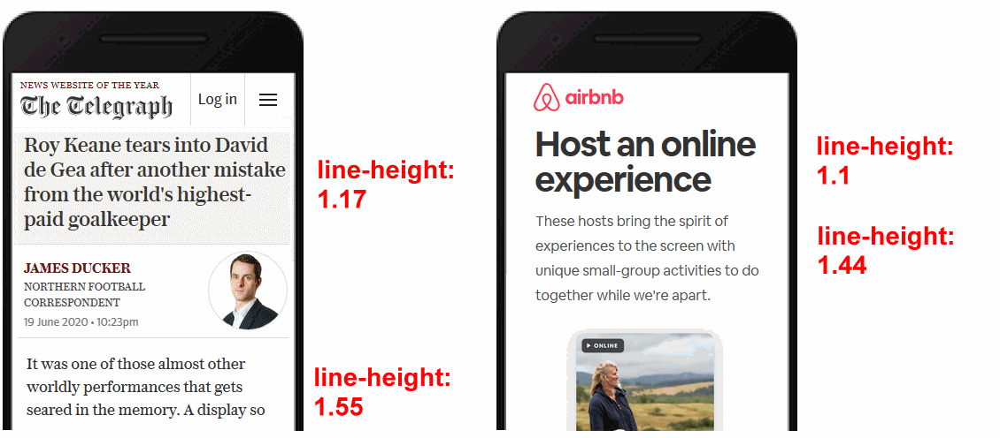
Updating your leading values
In VS Code:
- Open page-1.html.
- Update the p style as shown below.
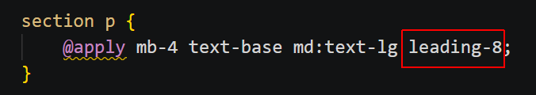
- Save page-1.html and view web page in your browser.
- Open page-2.html.
- Update the h1 style declaration as shown below.
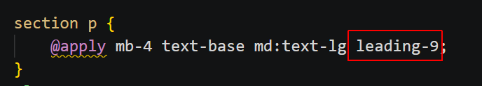
- Save page-2.html and view web page in your browser.
- Open page-3.html.
- Update the p style declaration as shown below.
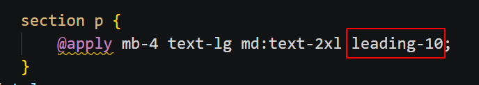
- Save page-3.html and view web page in your browser.
About text tracking
In typography, the term tracking refers to the spacing between text characters within a heading, sub-heading or paragraph.
In web pages, reduced or increased letter-spacing is often used in headings for visual effect.
You will commonly see letter spacing effects applied in brand logos to achieve a distinctive appearance. See the examples below.
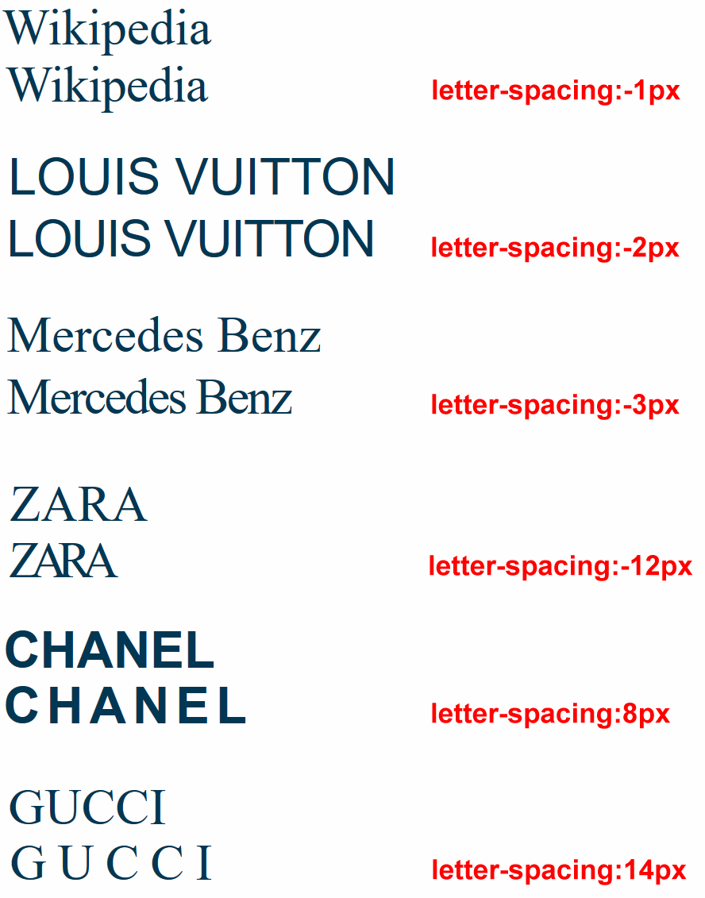
TailwindCSS provides a number of classes to simplify adding tracking values, such as tracking-tight, tracking-tighter, and tracking-wide.
Updating your tracking values
Follow these steps. In VS Code:
- Open page-1.html.
- Update the h1 and h2 style declaration as shown below.
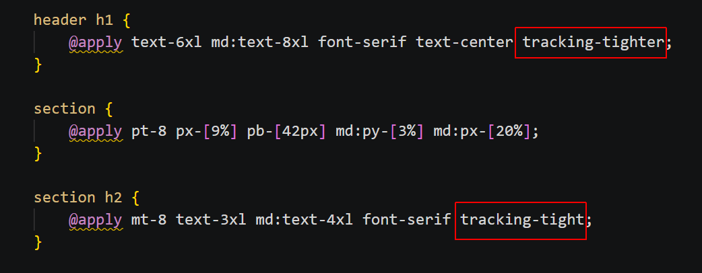
- Save page-1.html and view the web page in your browser.
- Open page-2.html.
- Update the h1 and h2 style declaration as shown below.
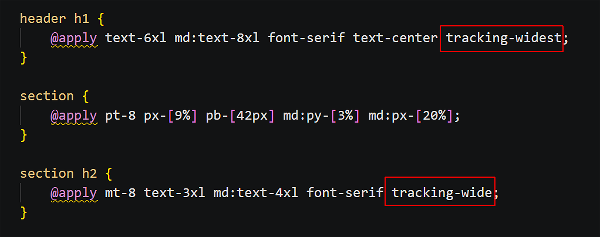
- Save page-2.html file and view the web page in your browser.
- Open page-3.html.
- Add a new section h2 style declaration as shown below.
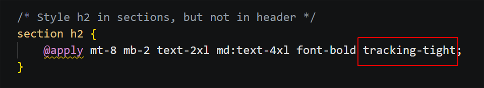
- Save page-3.html and view the web page in your browser.
About text case
CSS allows you to control the case of text (upper, lower, capitals) in your web page, without actually changing the text in your HTML.
This property can:
- Make text ALL CAPITAL LETTERS
- Make text all lowercase letters
- Capitalize The First Letter Of Each Word.
Updating your text case property
Follow these steps. In VS Code:
- Open page-2.html.
- Add a new style rule to the h2 style declaration as shown below.
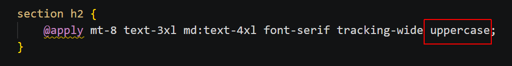
- Save page-2.html view the web page in your browser.
Updating your index.html styles
Follow these steps to update the styles for your website's home page:
- In VS Code, open the index.html file in your main 📁 assets/css folder.
- Update your styles as shown below:
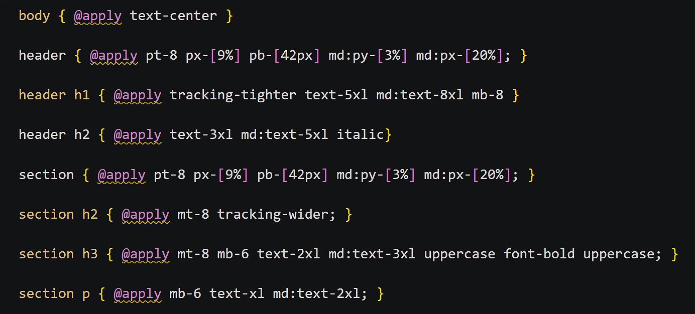
- Save the index.html file and view it in your browser.
Your four completed web pages should now look similar to the following:
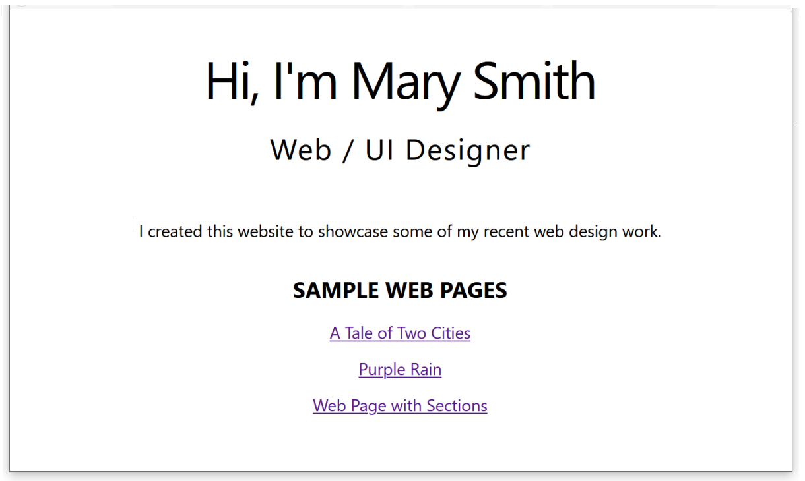
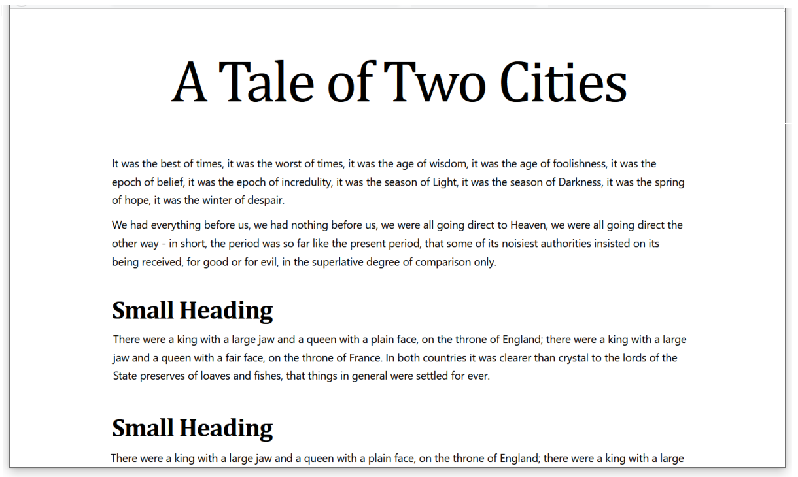
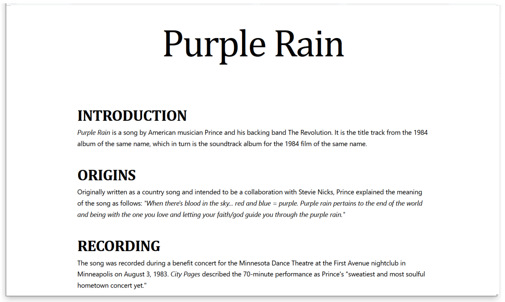
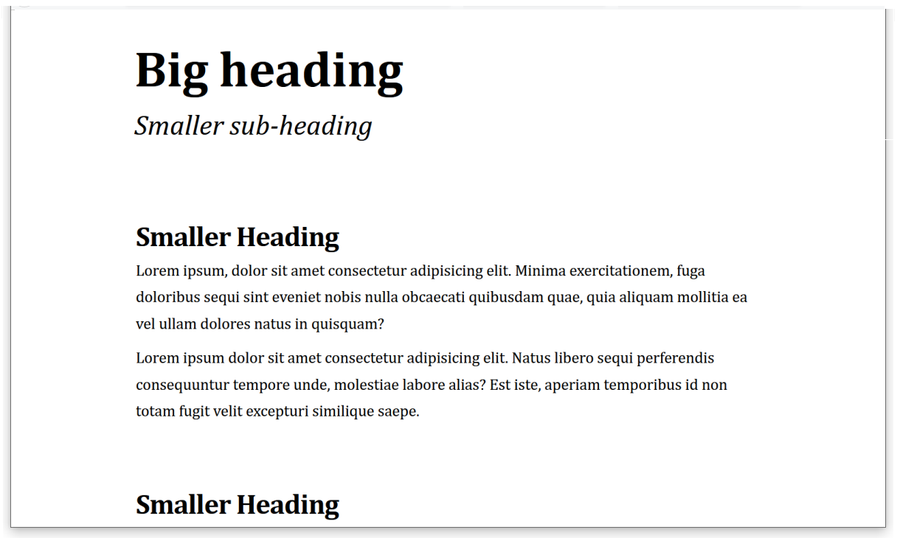
Uploading your work to GitHub
You are now ready to upload your work to your account on GitHub.
- Open a new tab in your web browser and go to github.com. If you are not already signed in to your GitHub account, sign in now.
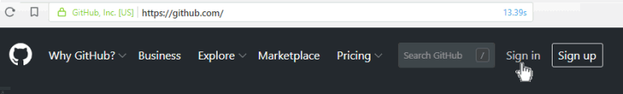
- On your GitHub home page, click the name of the repository (‘repo’) that holds your web pages. It's name will look as follows, where username is your chosen username on GitHub. username.github.io
- On the next GitHub screen displayed, near the right of the screen, you can see a button named Add file. Click on it.

- From the dropdown list displayed, choose the option Upload files.
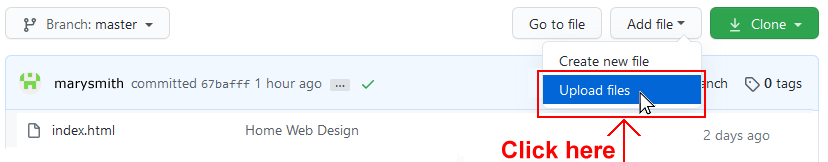
- In File Explorer (Windows) or Finder (Apple Mac), drag-and-drop your index.html file and your 📁 assets and 📁 exercises sub-folders to upload them to your repository on GitHub.
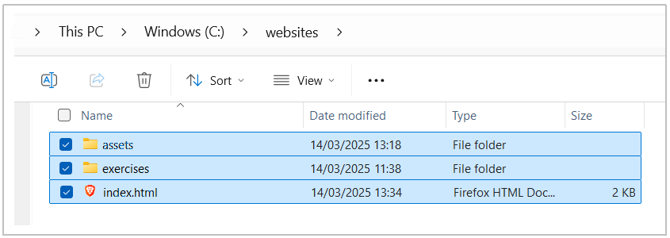
- Scroll down to the bottom of the GitHub screen, and accept or edit the short message (Add files via upload) in the Commit changes box.
- Finally, click the green Commit changes button to upload your entire exercises sub-folder and all the files it contains.
Your web pages are now published on GitHub at web addresses similar to the following, where username is the username you have chosen for your GitHub account:
https://username.github.io/index.html
Or simply:
https://username.github.io
And:
https://username.github.io/exercises/page-1.html
https://username.github.io/exercises/page-2.html
https://username.github.io/exercises/page-3.html
More learning resources
Tutorial Quiz
Tutorial Podcast
Sample AI prompt
At the end of the Container/Semantic Elements Tutorial were a number of sample AI prompts for generating HTML sample files. For each HTML file you created and saved in your 📁 exercises folder, use the prompt below to generate a CSS file.
Copy the generated output, open VS Code, choose File | New Text File, and then paste in the AI content.
Choose File | Save to save your file in your 📁 exercises/assets/css folder. Name your file something.css. (Replace 'something' with a suitable file name.) Do NOT use capital letters or empty spaces in the file name.
In VS Code, open the relevant HTML file, and link it to the appropriate CSS file.
Finally, display your HTML file with the linked CSS stylesheet in a web browser.
For an HTML file with semanttc <header>, <main> and <section> tags, generate a stylesheet CSS file that includes:
* An industry-standard resets block at the top of the file.
* Responsive hozizontal padding for the <header> and <section> tags. Use media queries with a breakpoint of 768px. Do not set any margins for the <header> and <section> tags.
* For the <header> tag, at and above the breakpoint, set horizontal padding to 12% and vertical padding to 3%. Below this breakpoint, set the horizontal and vertical padding to 5%.
* For the <section> tag, at and above the breakpoint, set horizontal padding to 22% and vertical padding to 2%. Below this breakpoint, set the horizontal and vertical padding to 5%.
* For the <header> <h1> tag, add a margin-bottom value of 1rem and set the line-height to 1.2.
* For the <header> tag, center-align the content.
* For the <section> <h2> tags, set a margin-bottom value of 0.5rem. For the <section> <p> tags, set a margin-bottom value of 1rem.
* Using the CSS clamp() function, apply the following fluid font sizes:
header h1: clamp(2.90rem, 3.36vw + 2.06rem, 4.75rem)
header h2: clamp(1.56rem, 1vw + 1.31rem, 2.11rem)
section h2: clamp(1.76rem, 1.40vw + 1.40rem, 2.53rem)
section p: clamp(1.15rem, 0.39vw + 1.05rem, 1.48rem)
* Set the font-weight of <header> <h2> to normal and font-style to italic.
* Set a line-height for <section> <p> tags to 1.45.
* Add two font stacks for Windows and MacOS as CSS custom properties, one for serif and one for sans-serif. Begin the serif stack with the font "Cambria", followed by "Hoefler Text", "Noto Serif" and "Droid Serif". For the sans-serif stack, begin with with "Segoe UI", followed by "-apple-system" and "Roboto".
* Apply a serif font to the <section> <p> text, and a sans-serif font for all other elements.
* Apply a letter-spacing of -3px to the <header> <h1> heading, and a value of -1px to all other headings.